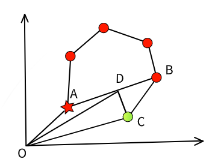

指令系统
指令系统用于飞行模式切换，飞行路径规划，设置控制目标值
.
├── Receiver/ 调用驱动接口获取遥控器指令
├── ManualControl/ 处理遥控器指令，模式切换
| ├── armhandler.c 解锁上锁检查
| |── pathplannerhandler.c
| |── pathfollower.c
| └── ...
|
|── FlightPlan/ 飞行计划状态，控制
|── Stabilization/ 姿态控制
|── PathPlanner/ 路径点切换，设置飞行路径
└── PathFollower/
├── pathfollower.cpp 根据机型切换执行逻辑
|── pidcontrole.cpp 位置控制，速度控制封装
|── vtolautotakeoffcontroller.cpp
|── vtolautotakeofffsm.cpp 起飞动作分为慢启动，拉升，稳定内部状态机切换
|── vtolflycontroller.cpp
|── vtollandcontroller.cpp
|── vtollandfsm.cpp
└── ...
飞行模式
自主模式
最常见的自主飞行模式，用户通过地面站设置路径点
飞控运行规划逻辑控制飞行器按照预期航线飞行，实现 逻辑
|  |
在大地坐标系下，几个关键点位置关系如上图所示，其中
红色为用户设置路径点，红色星号为起飞点，圆圈为一般路径点，飞行器逆时针绕圈飞行
绿色为某瞬时飞行器所在位置，为了方便理解，图中标注惯性系与坐标原点
- 为起飞点矢量
- 为预期航线
- 为飞行器某瞬时位矢。显然，它偏离了预期路径
- 为飞行器位置在预期航线的投影点，为其位矢
则位置环控制目标点由定义
位置控制由两个PID环路完成， 外环控制位置， 内环控制速度
内环路输出作为姿态目标，输出给增稳模块，保证运动稳定
手动增稳
手动模式是用户操纵微调，作为姿态环参考点